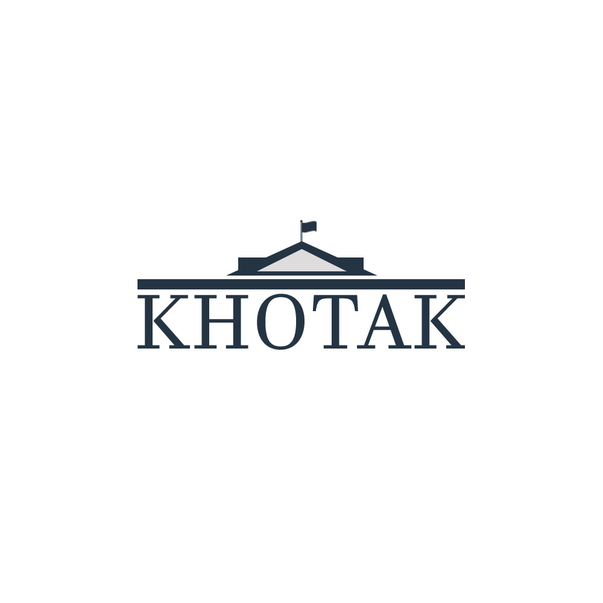

about khotak
Khotak is a website that taking the advantages of the technology (website platform) and invested for the graduated student. It provides multiple services that can help the students to path their academic future. And that will be done by a simple platform to create a vision of their future and their dreams. The project aims to help graduated students for award the great opportunity to choose their specialty in the university that will be done by using the best fd algorithms User Interface database and system architecture, which provide high performance and the efficiency from the roots to the output. The goals are to unify all the universities' links to get the easy entries and to help the educational institutions to promote their services in the same platform, and that can be done by sharing the labor of work in a flexible way.